User Research and Synthesis
Through Secondary Research, Research Survey, and User Interview, I made Affinity Maps, Emphathy Maps, Personas, and HMW Statements.
Wheaton Mobile is an app for Wheaton College (IL) students that aims to provide a platform where the users can efficiently get access to Wheaton College related resources and information that they often use.
This is a one-person end to end product launch project. I created the app from scratch on my own in order to improve upon the current platforms that are not designed for mobile experiences.
The Challenge
Student Portal is where the students and employees can get access to all the important college-related information, such as course registration, payroll, and school calendar. However, it is not optimized for mobile devices at all and takes multiple steps to get to relevant functions.
So for the past two years, the Student Government has been receiving requests from the student body to redesign the student portal and/or bring back the mobile app (The old app was taken down because of lack of maintenance and funding).
The official solution has been “Student on Tap.” It is just the front page of the portal website, and the users could save the link as a bookmark that looks like an app to their mobile device. It is an easy and low budget solution but has not solved many of the problems such as the lack of responsive design for mobile devices and inefficient navigation.
Goal
Therefore, the goal is to research and design an app where the students can easily get access to the features they need the most.
For this first release of the product, I'm targeting the undergraduate students at Wheaton College, since they are the majority on campus. Possibly for future releases, I will expand the audience to include graduate students, faculty, and staff as well.

Through Secondary Research, Research Survey, and User Interview, I made Affinity Maps, Emphathy Maps, Personas, and HMW Statements.
Based on the Research Synthesis, I brainstormed ideas and made User Stories (MVP and Next Release), User Flows, and Sitemaps.
I sketched several Red Routes and conducted Guerilla Usability Testing.
Then I designed Wireframes and Wireflows.
I made the entire Design System Library and built High Fidelity Mockups with animation.
I creseated a clickable Prototype and facillaitated several Usability Tests.
Research Questions
1. What are the undergraduate students’ opinions and experiences of the current platforms (Wheaton Portal and Student on Tap)?
2. Do students need a stand-alone mobile app? Why or Why not?
3. What are some of the top functions/features students wish to include in the potential mobile app? Why?
Primary Research – Quantitive Survey - Overview
The goal of the Research Survey is to access general opinions and get quantitative data. The Survey was sent to the entire undergraduate student body.
Platform: Survey Monkey
Total Responses: 304 out of ~2400 undergraduate students
6 questions about: Student on Tap usability and functions; Functions and desires for a Wheaton App (with optional comments for each question)
Primary Research – Quantitive Survey - Results Highlights
Almost all the students who left a comment in the survey expressed frustrations with the current platforms and hope to have an app that combines all the features they use often.
Top “Crucial to include” Features :
1. Single sign-on (70%)
2. Chapel Attendance (56%)
3. Directory (53%)
4. Building and Service Hours (41%)
5. Emergency Contact (40%)
6. Class Schedules (39%)
7. Menu (37%)
8. Chapel Seat Map (27%)
Top percentages “Quite helpful” Features:
1. Chapel Schedule (44%)
2. Building and Service Hours (43%)
3. Event (41%)
4. Announcement (40%)
5. Academic/Housing Calendar (37%)
6. Chapel Attendance (36%)
7. Menu (35%)
8. Class Schedules (34%)

Question: “How much do you feel the need for a stand-alone Wheaton mobile app (in addition to the Student on Tap mobile website)?

Question: “What's your opinion of the following functions of Student on Tap?”
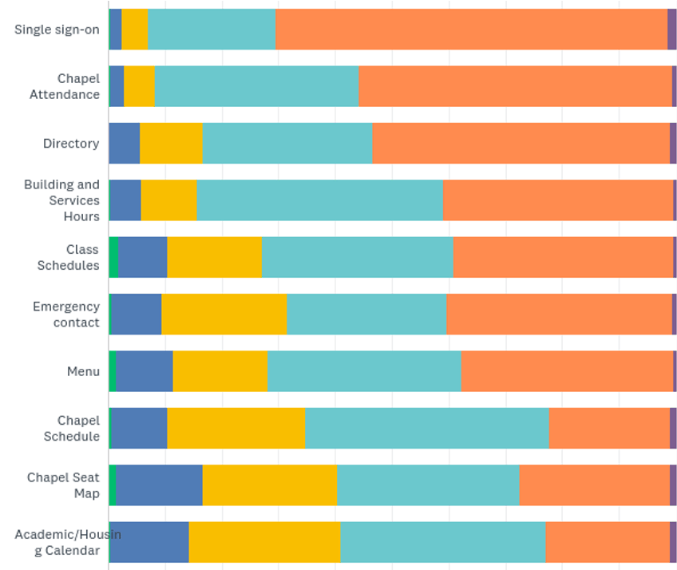
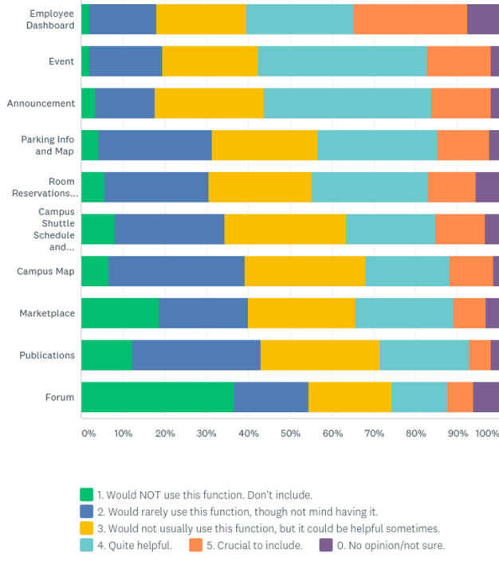
Primary Research – User Interview
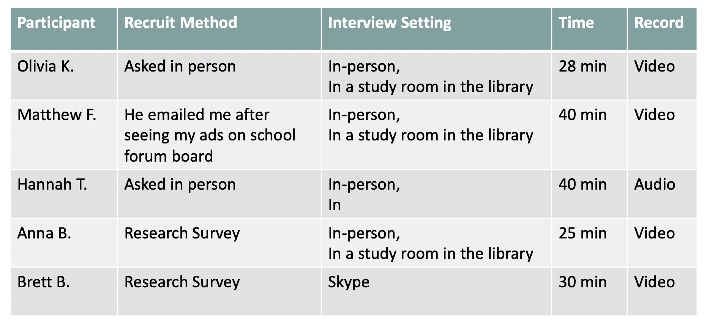
Sample Questions
What do you use … for? Could you walk me through your process of using…? (Menu Schedule, Who’s Who, Chapel Schedule, etc.)
On the survey, you said it’s crucial to include … feature. Could you tell me why?
How do you usually access these links? From Student on Tap or somewhere else?
Do you usually use your phone or laptop to access this feature?
How do you find out about new campus events and keep track of them?
How do you check your class schedules at the beginning of every semester?
Research Synthesis – Affinity Maps
Affinity Map First Version
Users’ opinions and experiences with Student on Tap and its features.
Grouped based on interview questions, such as "Existing Student on Tap features" and "Daily campus-related activities"
Problems:
Too many categories, too scattered
Not able to generate cohesive insights about the product as a whole

Affinity Map Second Version
Grouped based on users’ process of using Student on Tap:
How did they find the info they need
How did they process the info they find
How did they keep the info they process
Overall experience/expectation
Problems:
Trouble defining positive or negative
Some notes could belong to multiple categories
Many in “find info” but not much in other categories
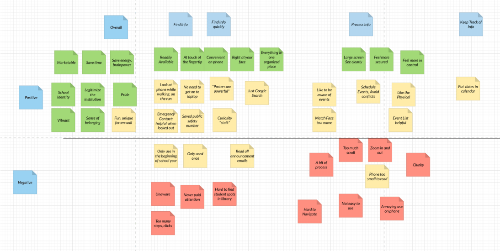
Affinity Map Second Version
Modified steps for Behavior Design:
1. Cue (How did users notice the activity/feature/task?)
2. Reaction (What did users do or say?)
3. Evaluation (How did the users feel?)
4. Consequence (What did the feature/action result in?)
5. Timing (How often and when?)
Problems:
Many extra notes did not fit into this model
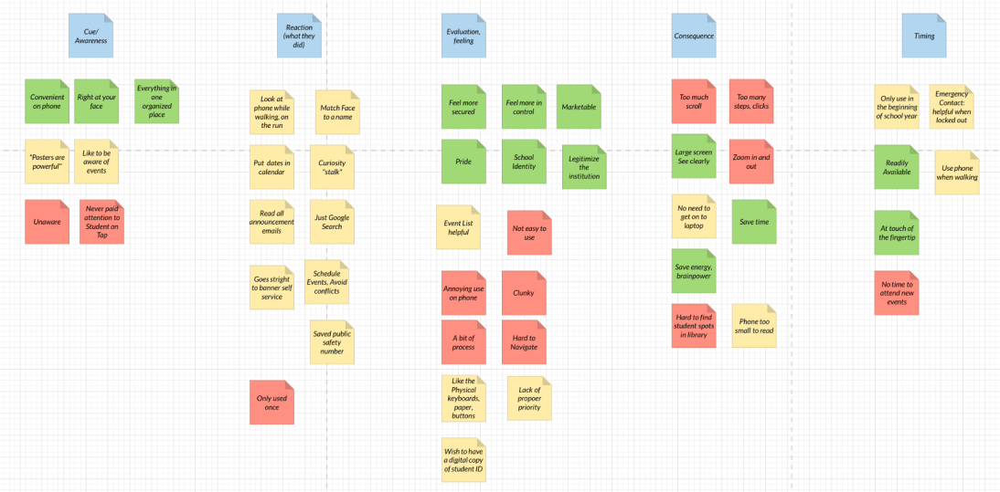
Affinity Map – Fourth and Final Version

Research Synthesis – Empathy Map
I made the empathy map in order to visually organize the insights, observations, and quotes that I have collected from the research to better understand the user’s pain points, goals, feelings, thoughts, and behaviors.

Research Synthesis – Persona
I created a user persona that helped me to make user-centered decisions during the next steps of my design process. Even though a persona is depicted as one person, it’s actually a synthesis of the observations and analysis I have recorded of many different users.
I chose to only make one persona for now because all the users I researched have needs similar enough to be grouped together.

Research Synthesis – How Might We (HMW) Statements
1. How might we help Wheaton College students find information related to campus activities easily?
2. How might we make some features more readily available and accessible on mobile devices?
3. How might we make students more aware of campus resources that they might want to use?
These are Information Architecture that I designed to better organize the app before I start making the screens.
They're all slightly different from the final prototype that I made, but they are very helpful in providing the initial structure for the app.
Minimal Viable Product (MVP)
A Minimum Viable Product (MVP) is a prototype that contains the essential features a user would need to complete the essential tasks but nothing else.
Based on the research result, I identified five features that are crucial to include: single sign-on, chapel seat and attendance, directory, hours, and menu.
I designed the lazy registration pattern: allowing the user to skip the sign-in process to access the app first so that they can save time, and it would also benefit visitors and first-time users since they won't be stuck behind the sign-in process. After seeing what the app offers, then they're more likely to be willing to sign in. Certain features are limited when not logged in for security reasons, such as students' contact info, whereas others do not require a login, such as looking up menu since the cafeteria is open to everyone.

Next Release
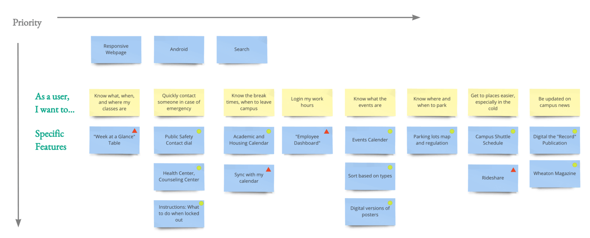
Site Map

User Flow (Red Routes)
The User Flow detailed the critical paths users will follow when using my app.

User Flow - Directory
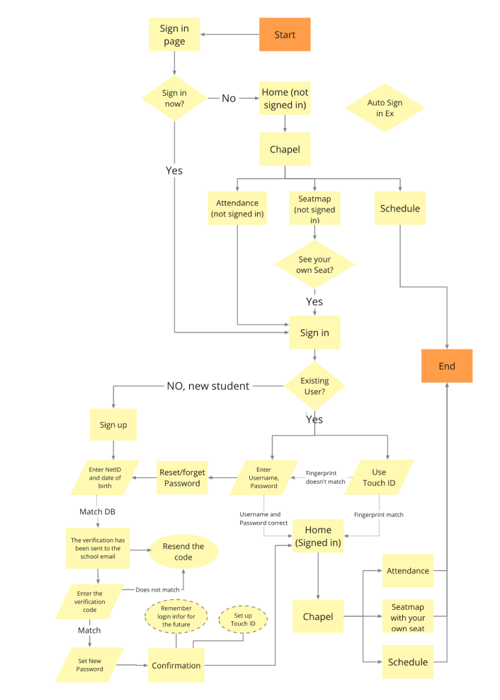
User Flow - Chapel
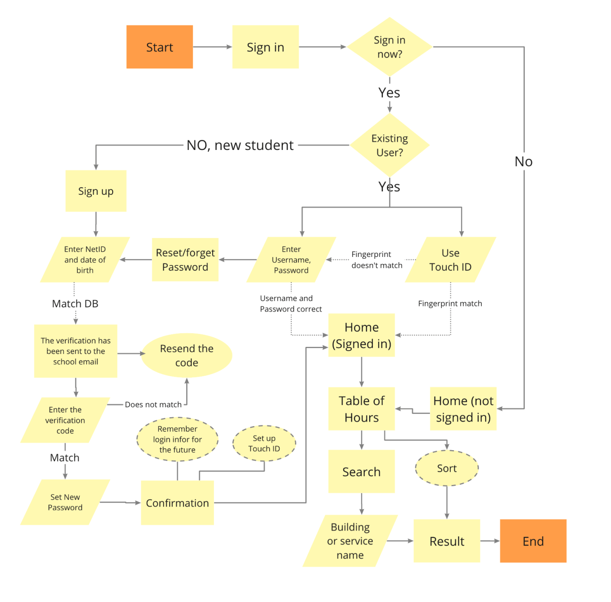
User Flow - Hours

Keys
Sketches
Based on the user flow, I then made a total of 40 Sketches and connected them into a clickable sketch prototype. Here are just some examples.
You can try out the entire prototype at https://marvelapp.com/e96bii4
I only designed four of the 12 potential features listed on the home page for this first release of Minimal Viable Product. The reason that I included the rest on the home page was because this layout could benefit the design of the future products, since one of the user's desires is to have a product that combines all the features.
I included some screens that are not in the key red routes, such as the sidebar menu, settings, and profile, because though they are not the shortest route for the users to complete a task, these screens are essential for the functionality of the app, such as easy navigation, log out, and change passwords.

Guerilla Usability Testing
Three short 15-min in-person Usability Tests.
Some of the issues and ways to improve include:
1. The icon and link "Profiles" on the home screen was confused with "Directory." Changing it to "My profile" would easily clear the confusion.
2. Confusion over being able to zoom in the chapel seat map. Adding a hint on the initial screen could help. It is partially because the prototype cannot show the transition from the whole map to the zoomed-in section.
3. New students who need to create a new account cannot easily find the "new student" link on the login page. Making the link more prominent and separated from the primary button could help.
Wireframes and Wire Flows
After modifying the sketches, I created the wireframes and wire flows the for red route. Slightly different from the user flow, for the wire flows, I decided to separate "Access Home Page" (logging in) as a different route from the rest so that it's not too repetitive. I also added a route for returning users who could sign in a lot faster than the first time users.

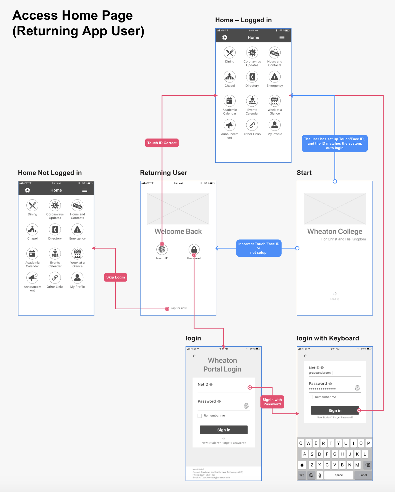
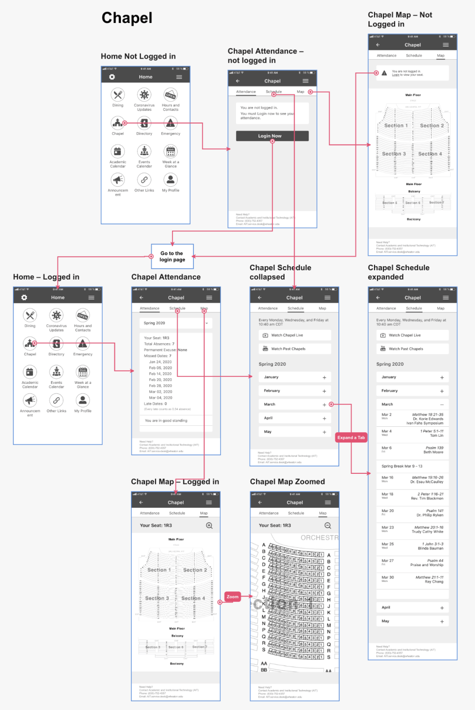
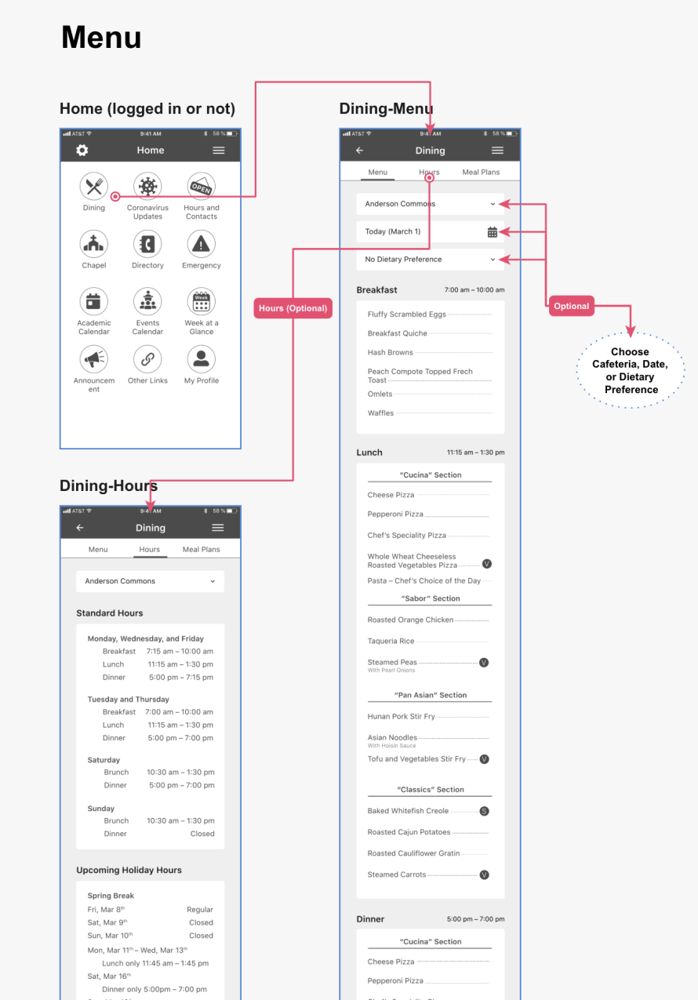
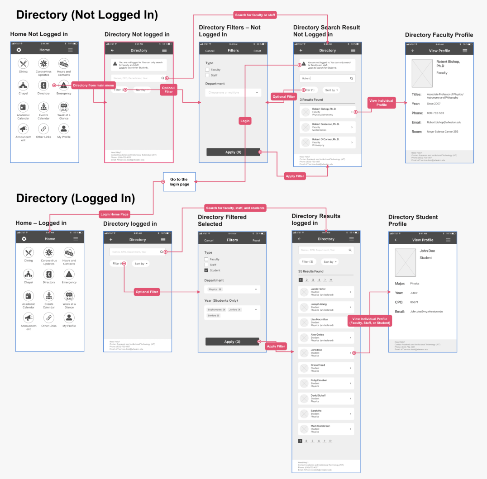
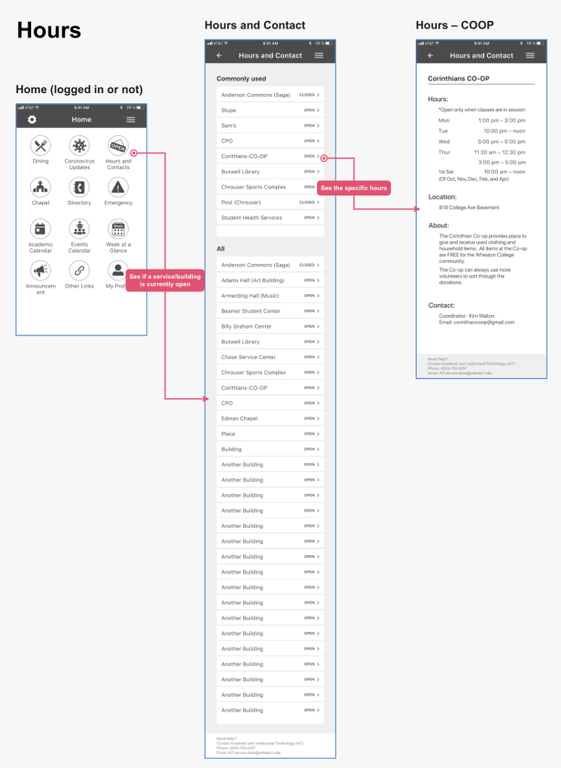
Edge Cases

Brand Platform
Wheaton College already has its existing branding guideline for print and website, so I incorporated some of its official visual designs, such as logo, typography, and color. For the mobile app branding, I focused more on usability than the college's educational aspect.
Company/Product Name: Wheaton Mobile
Mission/Vision: Wheaton Mobile aims to provide a platform where users can quickly and effortlessly get access to Wheaton College related resources and information that they often use. The students’ campus experience is what we care about the most.
Rationale: The learning curve should not be steep for this app. The users should be able to figure out how to use it quickly, even for first-time users, so that they won’t waste any time trying to navigate. Though Wheaton Mobile might not bring direct monetary profits to the school, it will increase the satisfaction of the student body, thus embodying Wheaton College liberal arts philosophy of “educate the whole person to build the church and benefit society worldwide.”
Brand Attributes: Official, Trustworthy, Inviting, Convenient, Sleek.
Rationale: Wheaton Mobile should first and foremost represent Wheaton College and be considered an official platform. The information it presents should be accurate and trustworthy. The clear layout of the app should make the users’ life more convenient. The design should be not distracting but visually pleasing and inviting users to stay. The users’ flow of using the app should be smooth and streamlined.
Design System (Brand Guidelines)
Inspired by Google Material Design, I created the comprehensive design system/brand guideline that includes Logo, Color, Typography, Icons, Elevation, States, Layout, Buttons, Controls, Lists, Text Fields, Navigation, and Imagery.
The logos, typeface family, and primary and secondary colors are the same as the college's official branding, but I added more color and font variations tailored to the mobile platform.
Using the atomic design methodology, I started with small components such as icons, background elevation, and list items and gradually combined them into bigger components such as navigation bars and cards.
For each component, I detailed the dimensions and other essential properties for the development hand-off. All of these components are created as symbols or layer styles in Sketch, so it speeds up the workflow later on and allows for easy modification, expansion, and collaboration.
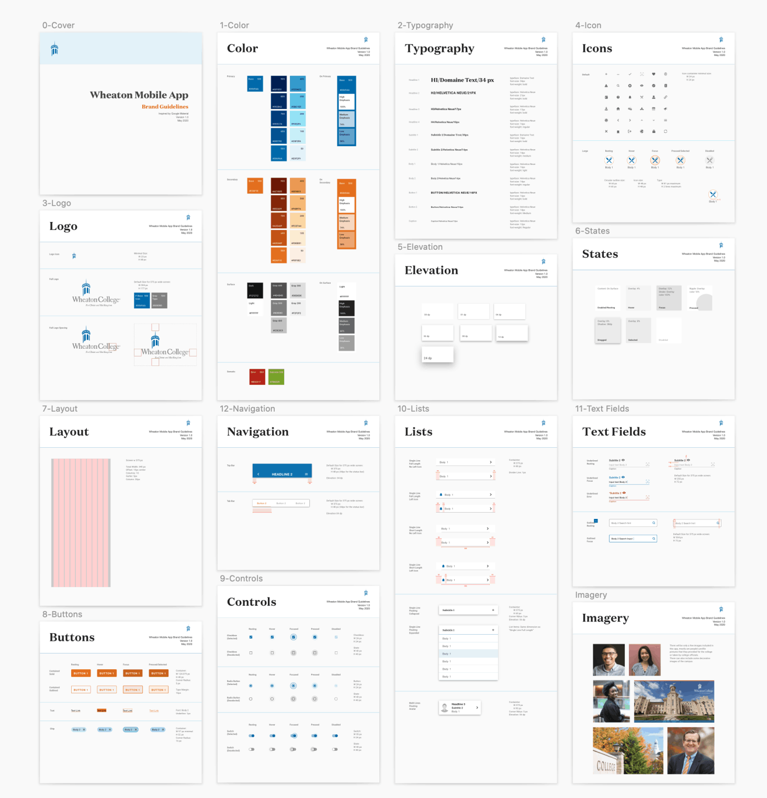
High Fidelity Mockups
I turned all the wireframes into the high fidelity mockups. A total of more than 40 screens.
Here are some of the additional routes. "Navigation and Settings" route shows the multiple ways users can access the menu, settings, and profile, so they could easily find these essential functions. "Logged in vs. Not Logged in" route gives some examples of different features offered for users who logged in and those who did not. Enabling the user to skip login first could save their time and give them more freedom.

Animation
I used Invision Studio to create animations, such as micro interactions and transitions. Here are some examples:


Prototype
Here is the link to the first iteration of the prototype
Usability Test – First Round
I conducted 5 modulated usability tests (three in-person and two remote ones).
Objective: Uncover usability problems in the existing red routes.
Questions:
1. Can the users navigate quickly (home, side hamburger, and tab)?
2. Do the users understand the difference between the “logged in” features and the “not logged in” features?
3. Do the users understand the difference between the directory contact and the business hours and contacts?
4. Do the users know how to use the filter when searching in the directory?
5. Can the users find logout and other settings easily?
Tasks I asked each user to complete:
1. The first scenario is that you’re an English major, but you’re not sure if that’s a good choice. So you would like to talk to an upperclassman who have already declared their majors. You would like to use this app to find their contact info, such as their email address.
2. You would like to find out what’s today’s lunch at saga, and when is the earliest time you can go in for lunch.
3. You would like to find out when is CO-OP open this Wednesday and where it is located on campus.
4. You would like to change your own profile picture and then logout.
Result/Findings:
All the users were able to complete the tasks eventually, though some took a lot longer than the others due to the issues described below.
1. There was no major issue with the layout and navigation, though some menu items need to be reworded.
2. All of the users chose to login first. When I showed them the not logged in screens, they were able to notice the difference and login immediately.
3. Some of the users were confused about what "Directory" and "Hours and Contact" meant.
4. Many users didn't think about using the filter in the first place.
5. It was very easy to locate settings and "my profile." Users like the multiple routes to complete the same task.
Here is the list of the issues by priority and before and after comparisons of the critical and major issues.


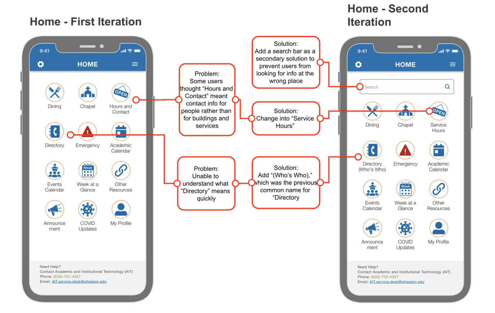
Here is the link to the second iteration of the prototype
Usability Test – First Round
Still in progress...
Looking for 5 participants. Anyone who has a smart phone.
If you're interested in participating, please let me know.
Email: dainiliu.creative@gmail.com